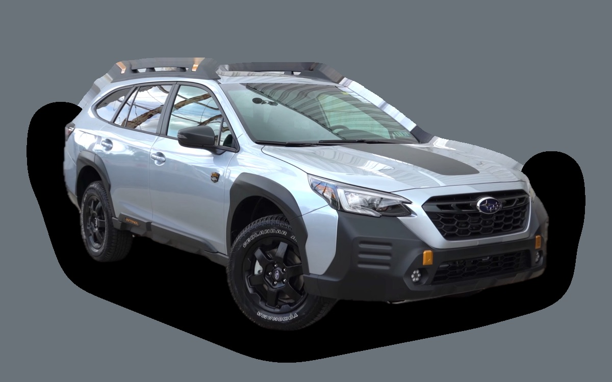

Vad kostar en Subaru Outback per månad?
En Subaru Outback från 2023 kostar cirka 4 752 kr i månaden, allt inräknat.
4 752 krper månad, årsmodell 2023
351 000 krpris, årsmodell 2023
429 900 krnypris från
Dprisvärdhetsbetyg (2023)

_front_view_03.png){kind=link}
Månadskostnad per årsmodell
| Årsmodell | Version i beräkningen | Pris | Per månad | Betyg |
|---|---|---|---|---|
| 2026 | 2.5i Boxer 169 AWD, Active | 429 900 kr | 6 063 kr | E |
| 2023 | 2.5i Boxer 169 AWD, Active | 351 000 kr | 4 752 kr | D |
Räknat på 5 års ägande och 1 250 mil per år, med bränslepriser från 2026-10-22. Månadskostnaden innehåller värdeminskning, drivmedel, service och reparationer, försäkring och fordonsskatt.
Så fördelas kostnaden för en 2023:a
- Värdeminskning: 1 618 kr/mån
- Drivmedel: 1 875 kr/mån
- Service och reparationer: 557 kr/mån
- Försäkring: 506 kr/mån
- Fordonsskatt: 197 kr/mån
Begagnatpriser i annonser
| Årsmodell | Medianpris | Annonser | Typiskt miltal |
|---|---|---|---|
| 2025 | 429 700 kr | 11 | 800 mil |
| 2024 | 399 400 kr | 31 | 3 400 mil |
| 2023 | 377 000 kr | 8 | 5 800 mil |
| 2022 | 344 500 kr | 33 | 7 300 mil |
| 2021 | 320 900 kr | 8 | 9 200 mil |
Medianpriset i svenska annonser per årsmodell i oktober 2026 (källa: Blocket, AutoUncle). Annonspriser är utgångspriser, och slutpriset kan bli lägre.
Motorer och versioner
| Motor | Drivmedel | Effekt | 0–100 km/h | Förbrukning (WLTP) | Räckvidd | Årsmodeller | Pristillägg |
|---|---|---|---|---|---|---|---|
| 2.5i Boxer 169 AWD | Bensin | 169 hk | 10,2 s | 8,7 l/100 km | – | från 2021 | – |
- Utrustning: Active, Touring (+58 900 kr)
Fakta
- Kaross
- Kombi
- Årsmodeller
- sedan 2021
- Nypris från
- 429 900 kr
- Bagage
- 561 liter
- Euro NCAP
- 5 av 5 stjärnor
- Nybilsgaranti
- 3 år
- Driftsäkerhet
- 4 av 5
- Helförsäkring, uppskattning
- 7 400 kr/år
- Service, uppskattning
- 4 300 kr/år
Vanliga fel att ha koll på
- CVT-växellåda (Lineartronic), reparation cirka 35 000 kr
Felen gäller vissa motorer och årsmodeller. I kalkylatorn räknas risken för just den version du väljer.
Fördelar och nackdelar
Fördel
Fyrhjulsdrift som standard och hög markfrigång.
Nackdel
Hög förbrukning och hög malusskatt.
Liknande bilar
 BMW 5-serie Touring4 770 kr/mån som 2020:a
BMW 5-serie Touring4 770 kr/mån som 2020:a Volvo V604 325 kr/mån som 2023:a
Volvo V604 325 kr/mån som 2023:a Mercedes-Benz E-klass Kombi W2135 262 kr/mån som 2020:a
Mercedes-Benz E-klass Kombi W2135 262 kr/mån som 2020:a Volvo V904 165 kr/mån som 2022:a
Volvo V904 165 kr/mån som 2022:a Volkswagen Touran4 165 kr/mån som 2022:a
Volkswagen Touran4 165 kr/mån som 2022:a Volkswagen ID. Buzz4 130 kr/mån som 2023:a
Volkswagen ID. Buzz4 130 kr/mån som 2023:a
Uppdaterad 2026-10-27 · annonsdata okt 2026